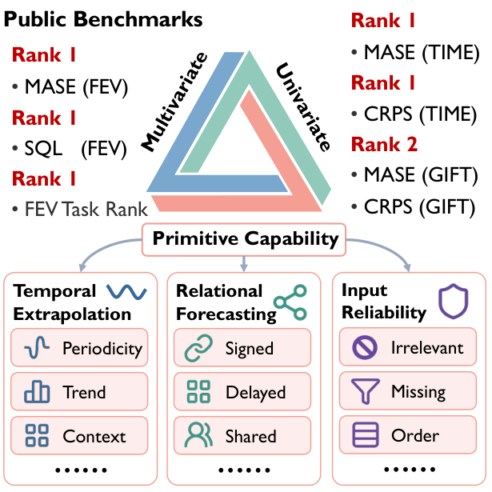
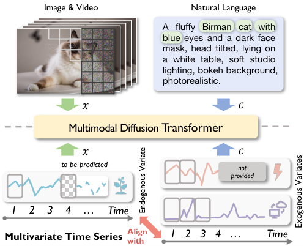
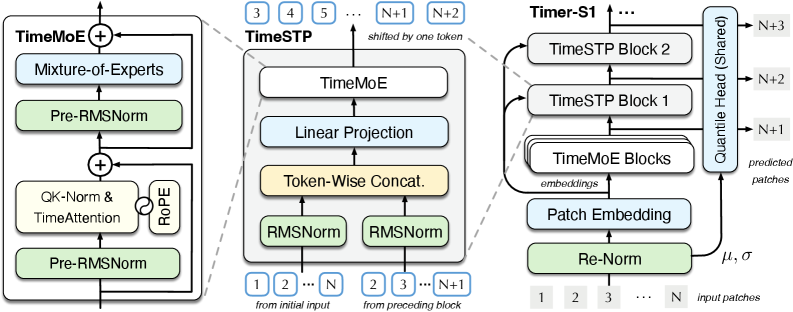
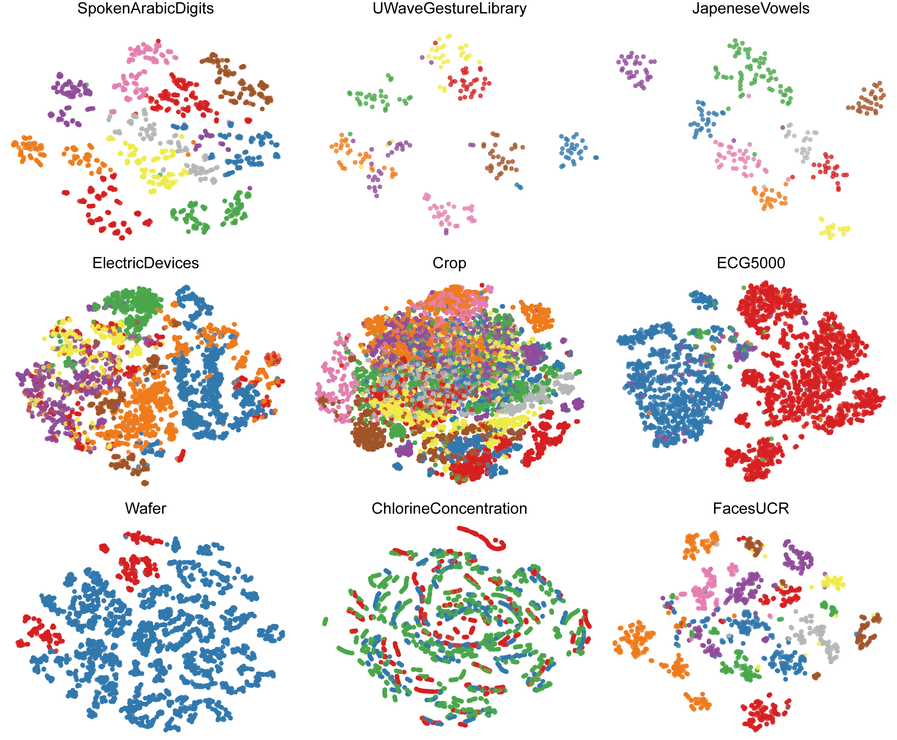
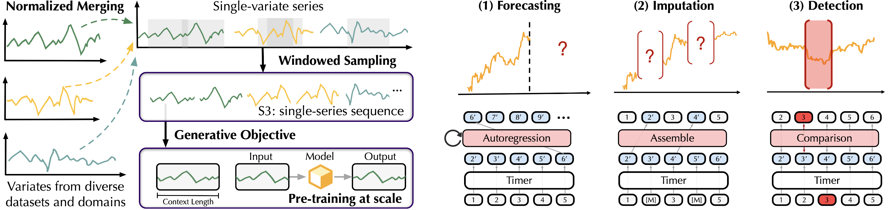
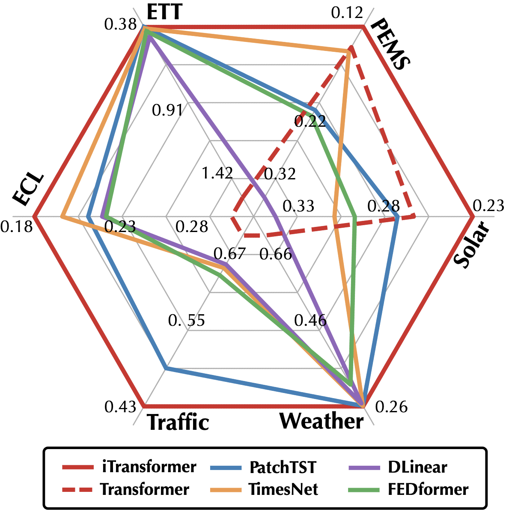

About Me
I am a Ph.D. student in Software Engineering at the School of Software, Tsinghua University, advised by Prof. Mingsheng Long. Previously, I received my bachelor's degree in Software Engineering from Tsinghua University in 2024.
Previously, I interned at ByteDance and Huawei, working on time series modeling and AI applications.
My research focuses on time series foundation models and deep time series analysis. I have contributed to the Timer series, working on large-scale pre-training data, transferable temporal representations, and scalable forecasting architectures. I am also interested in generative models and world models, particularly how temporal modeling can support multimodal reasoning and physical intelligence.
Currently, my research interests include:
- Time series foundation models: scalable pre-training for generalizable forecasting and understanding.
- Multimodal forecasting: conditional generation with exogenous information and evaluation beyond point-wise errors.
- World models: learning predictive models of the world for multimodal reasoning and physical intelligence.
News
- Our preprint Timer-M1 is available, introducing primitive-based pre-training for zero-shot multivariate time series forecasting.
- Timer-S1, a billion-scale time series foundation model, is available with open model weights.
- TimesBERT appeared at ACM Multimedia 2025.
* Equal contribution. My name is in bold.
-

arXiv 2026Timer-M1: A Multivariate Time Series Foundation Model via Learning Primitives
arXiv preprint, 2026.
Primitive-based data synthesis and episodic pre-training for zero-shot multivariate forecasting.
BibTeX
@article{timerm12026, title = {Timer-M1: A Multivariate Time Series Foundation Model via Learning Primitives}, author = {Haoran Zhang and Haixuan Liu and Xingjian Su and Yong Liu and Zhi Chen and Yuxuan Wang and Jianmin Wang and Mingsheng Long}, journal = {arXiv preprint}, year = {2026}, eprint = {2610.11734}, archivePrefix = {arXiv}, url = {https://arxiv.org/abs/2610.11734} } -

arXiv 2026DiTS: Multimodal Diffusion Transformers Are Time Series Forecasters
arXiv preprint, 2026.
Conditional flow matching and time-aligned modulation for covariate-aware forecasting.
BibTeX
@article{dits2026, title = {DiTS: Multimodal Diffusion Transformers Are Time Series Forecasters}, author = {Haoran Zhang and Haixuan Liu and Yong Liu and Yunzhong Qiu and Yuxuan Wang and Jianmin Wang and Mingsheng Long}, journal = {arXiv preprint}, year = {2026}, eprint = {2602.06597}, archivePrefix = {arXiv}, url = {https://arxiv.org/abs/2602.06597} } -

arXiv 2026Timer-S1: A Billion-Scale Time Series Foundation Model with Serial Scaling
arXiv preprint, 2026.Co-first author
Scaling time series foundation models through sparse experts and serial-token prediction.
BibTeX
@article{timers12026, title = {Timer-S1: A Billion-Scale Time Series Foundation Model with Serial Scaling}, author = {Yong Liu and Xingjian Su and Shiyu Wang and Haoran Zhang and Haixuan Liu and Yuxuan Wang and Zhou Ye and Yang Xiang and Jianmin Wang and Mingsheng Long}, journal = {arXiv preprint}, year = {2026}, eprint = {2603.04791}, archivePrefix = {arXiv}, url = {https://arxiv.org/abs/2603.04791} } -

ACM MM 2025TimesBERT: A BERT-Style Foundation Model for Time Series Understanding
ACM International Conference on Multimedia (ACM MM), 2025.Oral
Multi-granularity pre-training for general-purpose time series understanding.
BibTeX
@inproceedings{timesbert2025, title = {TimesBERT: A BERT-Style Foundation Model for Time Series Understanding}, author = {Haoran Zhang and Yong Liu and Yunzhong Qiu and Haixuan Liu and Zhongyi Pei and Jianmin Wang and Mingsheng Long}, booktitle = {ACM International Conference on Multimedia (ACM MM)}, year = {2025}, eprint = {2502.21245}, archivePrefix = {arXiv}, url = {https://arxiv.org/abs/2502.21245} } -

ICML 2024Timer: Generative Pre-trained Transformers Are Large Time Series Models
International Conference on Machine Learning (ICML), 2024.
Generative pre-training for transferable forecasting, imputation, and anomaly detection.
BibTeX
@inproceedings{timer2024, title = {Timer: Generative Pre-trained Transformers Are Large Time Series Models}, author = {Yong Liu and Haoran Zhang and Chenyu Li and Xiangdong Huang and Jianmin Wang and Mingsheng Long}, booktitle = {International Conference on Machine Learning (ICML)}, year = {2024}, eprint = {2402.02368}, archivePrefix = {arXiv}, url = {https://arxiv.org/abs/2402.02368} } -

ICLR 2024iTransformer: Inverted Transformers Are Effective for Time Series Forecasting
International Conference on Learning Representations (ICLR), 2024.Spotlight
Variate tokens and inverted attention for effective multivariate forecasting.
BibTeX
@inproceedings{itransformer2024, title = {iTransformer: Inverted Transformers Are Effective for Time Series Forecasting}, author = {Yong Liu and Tengge Hu and Haoran Zhang and Haixu Wu and Shiyu Wang and Lintao Ma and Mingsheng Long}, booktitle = {International Conference on Learning Representations (ICLR)}, year = {2024}, eprint = {2310.06625}, archivePrefix = {arXiv}, url = {https://arxiv.org/abs/2310.06625} }
Open Source
Code and resources accompanying our research:
- iTransformer
Inverted Transformers for multivariate time series forecasting. - Large Time-Series Model
Timer code, pre-training data, and model resources. - SimMTM
Masked time series pre-training for forecasting and classification. - Time Series Library (TSLib)
Contributions to an open-source library for deep time series analysis.
Education
- Ph.D. in Software Engineering (Master's-to-Ph.D. track), Aug. 2024–present
School of Software, Tsinghua University - B.Eng. in Software Engineering, Sept. 2020–June 2024
School of Software, Tsinghua University
Experience
- Project Intern at ByteDance, International E-commerce · Supply Chain Algorithms
Led the development of multivariate time series foundation models for supply chain forecasting. - Project Intern at Huawei, Dynamic Workload Forecasting and Optimization
Led project development, including data integration, method selection, and development tooling.
Professional Services
Reviewer
- ACM International Conference on Multimedia (ACM MM), 2026
- International Conference on Learning Representations (ICLR), 2026, 2027
- International Conference on Machine Learning (ICML), 2025, 2026
- Conference on Neural Information Processing Systems (NeurIPS), 2024, 2025
Teaching Assistant
- Introduction to Artificial Intelligence （人工智能基础）, Spring 2026
- Deep Learning （深度学习）, Fall 2025, Fall 2026
- Machine Learning （机器学习）, Spring 2025